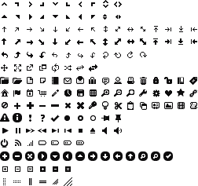

{% include JB/setup %}
{% raw %}
<div>
<div class="book" title="The button () Method"><div class="book"><div class="book"><div class="book"><h1 class="title2"><a id="the_button_open_parenthesis_close_parent" class="calibre1"></a>The button () Method</h1></div></div></div><p class="calibre7">The <code class="literal">button ()</code> method can be used
    in two forms:</p><div class="book"><ul class="itemizedlist"><li class="listitem"><p class="calibre7">$(selector, context).button (options);</p></li><li class="listitem"><p class="calibre7">$(selector, context).button (“action”, params);</p></li></ul></div><div class="book" title="The button (options) Method"><div class="book"><div class="book"><div class="book"><h2 class="title5"><a id="the_button_open_parenthesis_options_clos" class="calibre1"></a>The button (options) Method</h2></div></div></div><p class="calibre7">The <code class="literal">button (options)</code> method
      declares that an HTML element should be managed as a button. The
      <code class="literal">options</code> parameter is an object that
      specifies the appearance and behavior of the button.</p><p class="calibre7">A button can be represented by text, but can also be associated
      with icons that are predefined in a jQuery UI CSS file associated with
      each theme (here, the <em class="calibre4">jquery.ui.theme.css</em> file). This file contains
      a set of CSS classes to access the icons located in a file in the
      <em class="calibre4">jqueryui/development-bundle/themes/smoothness/images</em>
      directory (for the smoothness theme). In this CSS file, you will see the
      CSS class definitions, such as the following:</p><a id="I_programlisting5_d1e4065" class="firstname"></a><pre class="programlisting"><span class="firstname"><strong class="userinput">CSS class definition associated with an icon in the images file</strong></span>
.ui-icon-calendar { background-position: −32px −112px; }</pre><p class="calibre7">This allows us to use the <code class="literal">ui-calendar-icon</code> class in a button, for
      example, to use a calendar icon for the button.</p><p class="calibre7">The icons available in jQuery UI are shown in <a class="ulink" href="ch05s03.html#available_icons_in_jquery_ui" title="Figure 5-4. Available icons in jQuery UI">Figure 5-4</a>.</p><div class="book"><div class="figure"><a id="available_icons_in_jquery_ui" class="firstname"></a><div class="book"><div class="book"><a id="I_mediaobject5_d1e4081" class="firstname"></a></div></div><p class="title4">Figure 5-4. Available icons in jQuery UI</p></div></div><p class="calibre7"><a class="ulink" href="ch05s03.html#options_for_managing_buttons" title="Table 5-1. Options for managing buttons">Table 5-1</a> describes the
      options for managing buttons.</p><div class="table"><a id="options_for_managing_buttons" class="firstname"></a><p class="title7">Table 5-1. Options for managing buttons</p><div class="book"><table summary="Options for managing buttons" class="calibre14"><colgroup class="calibre15"><col class="calibre16"/><col class="calibre16"/></colgroup><thead class="calibre17"><tr class="calibre18"><th valign="bottom" class="calibre19"><p class="calibre7">Option</p></th><th valign="bottom" class="calibre19"><p class="calibre7">Function</p></th></tr></thead><tbody class="calibre20"><tr class="calibre18"><td valign="top" class="calibre21"><p class="calibre7"><code class="literal">options.disabled</code></p></td><td valign="top" class="calibre21"><p class="calibre7">When set to <code class="literal">true</code>, the button will appear inactive.
              Mouseovers will have no effect, but clicks on the button will
              continue to be taken into account.</p></td></tr><tr class="calibre22"><td valign="top" class="calibre21"><p class="calibre7"><code class="literal">options.label</code></p></td><td valign="top" class="calibre21"><p class="calibre7">Corresponds to the text
              displayed in the button. If not specified, the contents of the
              HTML element are used as button text.</p></td></tr><tr class="calibre18"><td valign="top" class="calibre21"><p class="calibre7"><code class="literal">options.icons</code></p></td><td valign="top" class="calibre21"><p class="calibre7">Associates icons with the
              button. There may be one before the button text (primary icon)
              and after (secondary icon). The values of the <code class="literal">primary</code> and <code class="literal">secondary</code> properties are the names of
              the CSS class defined in the CSS file (e.g., <code class="literal">"ui-icon-calendar"</code>).</p></td></tr><tr class="calibre22"><td valign="top" class="calibre21"><p class="calibre7"><code class="literal">options.text</code></p></td><td valign="top" class="calibre21"><p class="calibre7">Indicates whether the
              button text should be displayed. When set to <code class="literal">false</code>, the text will not be displayed.
              In this case, at least one icon should be
              present.</p></td></tr></tbody></table></div></div></div><div class="book" title="The button (“action”, params) Method"><div class="book"><div class="book"><div class="book"><h2 class="title5"><a id="the_button_open_parenthesis_quotation_ma" class="calibre1"></a>The button (“action”, params) Method</h2></div></div></div><p class="calibre7">The <code class="literal">button ("action", params)</code>
      method allows an action on buttons, such as disabling or changing the
      button text. The action is specified as a string in the first argument
      (e.g., <code class="literal">"disable"</code> to disable a
      button). <a class="ulink" href="ch05s03.html#the_button_open_parenthesis_quotatio" title="Table 5-2. The button (“action”, params) method actions">Table 5-2</a>
      describes the actions for this method.</p><div class="table"><a id="the_button_open_parenthesis_quotatio" class="firstname"></a><p class="title7">Table 5-2. The button (“action”, params) method actions</p><div class="book"><table summary="The button (“action”, params) method actions" class="calibre14"><colgroup class="calibre15"><col class="calibre16"/><col class="calibre16"/></colgroup><thead class="calibre17"><tr class="calibre18"><th valign="bottom" class="calibre19"><p class="calibre7">Action</p></th><th valign="bottom" class="calibre19"><p class="calibre7">Function</p></th></tr></thead><tbody class="calibre20"><tr class="calibre18"><td valign="top" class="calibre21"><p class="calibre7"><code class="literal">button ("disable")</code></p></td><td valign="top" class="calibre21"><p class="calibre7">Disable the
              button.</p></td></tr><tr class="calibre22"><td valign="top" class="calibre21"><p class="calibre7"><code class="literal">button ("enable")</code></p></td><td valign="top" class="calibre21"><p class="calibre7">Enable the
              button.</p></td></tr><tr class="calibre18"><td valign="top" class="calibre21"><p class="calibre7"><code class="literal">button ("refresh")</code></p></td><td valign="top" class="calibre21"><p class="calibre7">Refresh the display of
              the button. This is useful when the buttons are handled by the
              program and the display does not necessarily correspond to the
              internal state.</p></td></tr><tr class="calibre22"><td valign="top" class="calibre21"><p class="calibre7"><code class="literal">button ("option",
              param)</code></p></td><td valign="top" class="calibre21"><p class="calibre7">Retrieve the value of the
              option specified in <code class="literal">param.</code>
              This option is one of those used in button
              <code class="literal">(options)</code>.</p></td></tr><tr class="calibre18"><td valign="top" class="calibre21"><p class="calibre7"><code class="literal">button ("option", param,
              value)</code></p></td><td valign="top" class="calibre21"><p class="calibre7">Change the value of the
              <code class="literal">param</code> option. This option is
              one of those used in button
              <code class="literal">(options)</code>.</p></td></tr><tr class="calibre22"><td valign="top" class="calibre21"><p class="calibre7"><code class="literal">button ("destroy")</code></p></td><td valign="top" class="calibre21"><p class="calibre7">Remove the management of
              the buttons. The buttons revert to simple HTML without CSS class
              or event management.</p></td></tr></tbody></table></div></div></div></div></div>

{% endraw %}

